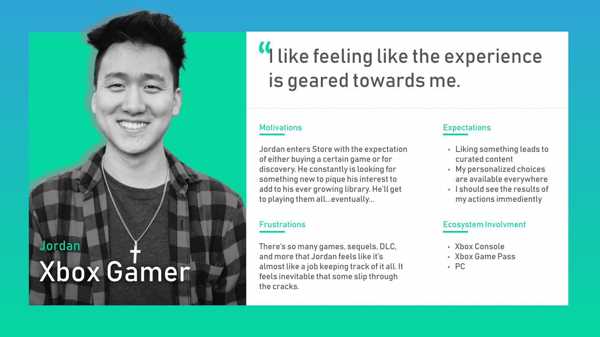
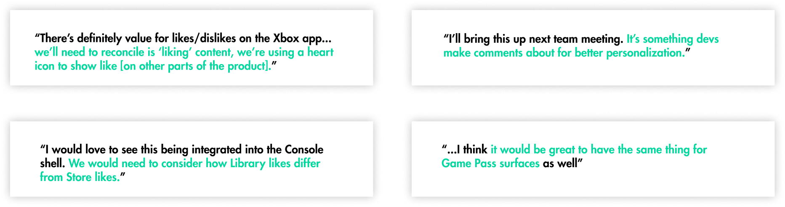
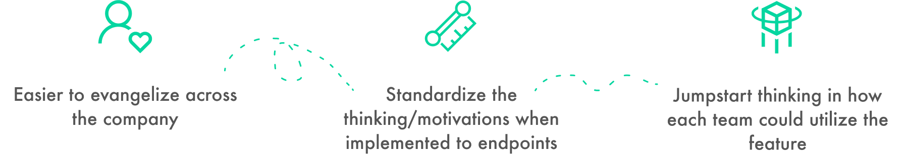

The User.
Xbox Store users, Game Pass users, and avid Xbox players.
The Endpoints.
Six Endpoints.
The Tools.
Figma.
The Role.
Product Designer.
The Objective.
Evaluate the Like/Dislike feature intended for Store and extend it to other endpoints across the ecosystem.
The Design Process.
- Dissect the current implementation of Like / Dislike
- Establish goals
- Analyze relevant research
- Determine user motivations
- Conduct competitive analysis
- Identify other endpoints that could benefit
- Cross-pollinate between work in the area
- Establish a design implementation framework
- Create conceptual comps
Exploration.
Starting out, I was given the task of breaking down the implementation of “Likes and Dislikes” in Store, the storefront accessible from the Xbox console, with the goal of extending it to other endpoints.
To begin with, I was given mocks of the current Store implementation:
{kind=link}
{kind=link}
{kind=link}
Before beginning anything, I penned out my intended process.
List Features & Surfaces.
The likes and dislikes feature rose on every surface where a game was in focus and we didn’t know the user’s opinion of the game, such as a game product page. As for the interaction flow from the mocks, it was relatively simple and straightforward.
Determing Endpoints.
The greatest challenge of this was the layout of the different ecosystems and the effort to converge. At this point, the user could use many different Xbox services, yet have a largely different personalized experience on each.
Competitive Analysis.
To get a wider sense of how explicit user personalization was commonly gathered, I conducted competitive analysis on products that used a form of likes/dislikes to parse user interests and help them explore.
{kind=link}
{kind=link}
Through this, there were some key takeaways:
Past Studies.
Part of the reason I was put on this project was with my past working in personlization for the Xbox ecosystem. I could take that previous knowledge and build on some Xbox personlization principles which I created with another designer.
This, in addition to findings within Microsoft’s Human Insights Library, helped support me for the next phase of the design process.
Ideation.
With a solid space understanding of the space around personalized recommendations, the next step was to flesh out a proposed user experience.
User Motivations.
Establishing user motivations were of key importance to do first, as it could bring concensus and convergence between endpoints through agreeing and understanding the shared audience. It would serve as the base when mapping out a user journey.
{kind=link}
Team Alignment.
Although this project started from Store, it was important to glean knowledge from other teams regarding their opinion of Likes/Dislikes being integrated in their own product, any of their previous explorations, and their input on the feature itself.
User Journey.
In order to tie all this together, I considered the user journey. I wanted to map out the entire “Recommendations” experience related with the feature, including how recommendations are displayed.
The initial user journey went as follows, while maintaining a vagueness for iterations, but key design points within to embed the research found:
Furthermore, in order to compel a cross-ecosystem exchange of user recommendations, I considered how the user could experience the feature across endpoint through the view point of how we collect data and use it to offer recommendations. This visual was extremely useful when sharing to visually communicate convergence.
Creation.
Building on the ideation, it was now time for me to build out the deliverable. However, a major question was what deliverable that would be.
With the goal of extending this to other endpoints while also ensuring proper ownership of each designer, I determined a design framework for implementation and conceptual mockups as a more appropriate output. There are many benefits with this form of deliverable:
Design Framework.
Breaking down the framework, there were two important parts to convey: how to implement “likes/dislikes” in your own endpoint, and also what the “north star” is.
Following the user journey, I could map out key steps to design for when building out the experience.
Concept Mocks.
To help communicate each step, I made sure to include examples for each step. Some of these examples were common applications from everyday products. Others were concept mocks of the endpoint with the feature implemented. This helped jumpstart thinking and discussion while bringing more of an iterative mindset to the table.
I combined these designs and framework together and shared them with the rest of the company. This helped to jumpstart the Likes/Dislikes work for Store when sharing with product managers. It also marked the beginning of the work on making ubiquitous data sources for personalized data in the Xbox ecosystem. Other endpoints are now implementing this feature as well, using the framework to ensure consistency across all products.
With improved user personalization and a framework for implementation, Xbox can quickly and easily have a unified personalization feature experience.
See it in action.

Determine the surfaces first.
For the Game Pass app, it would likely be a game product page and within game categories.

Establish the interactions.
Transparency is key here and it’s important that user are well-educated on their actions.

The final part of the experience is determining where recommendations arise. In this app, Home with the game categories would fit well.
Concept Mocks.
To illustrate the point, I created concept mocks for each endpoint in the ecosystem.
This helped spark conversation, discussion, and thought.
Final Note.
My experience working on this was enlightening to me when considering convergence of design as well as how to design within such a broad ecosystem with many different designers and stakeholders.
One of the most important lessons I learned was that involving other designers to gather early design requirements is invalable and saves a lot of time reiterating designs.
This framework and design mocks are serving as part of the foundation for Xbox’s unified personalized recommendations.